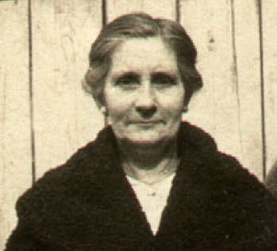
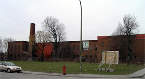

|
LA FAMILLE D'ÉZILDA COTÉ
 Les parents d'Ézilda, Gaudias Côté et
Georgiana Pageau, se marient le 6 novembre 1882 à Québec dans
l'église de la paroisse Saint-Sauveur.
Gaudias était né le 12 avril
1863 dans la paroisse Saint-Jean-Baptiste, dans le faubourg
Saint-Jean de la haute-ville. Ses parents sont Pierre Côté, forgeron, et
Salomée Pleau.
Georgiana est la fille d'un cultivateur de
Charlesbourg, Georges Pageau, et de Marie Jacques dit Duhault
(photo
ci-contre) . Elle y était née le 25 juillet 1865.
Aucun des époux ou des
témoins ne savent signer l'acte de mariage.
Gaudias
et Georgiana auront quatorze enfants, la majorité naissent à
Québec, dans la paroisse Saint-Sauveur, les derniers, à
Montréal. Petite anecdote amusante: Chaque
fois que Georgiana a un bébé, Gaudias remplaçe leur "set de chambre". Pourquoi?
(Information reçue de
Claude Côté, fils d'Émilien, qui l'a entendu raconter à maintes
reprises par ses tantes Blanche et Évangéline)
Éva
(baptisée Oliva) naît le 1 novembre 1883,
son parrain est Pierre Côté, forgeron et grand-père paternel et sa
marraine, Marie Duhault, sa grand-mère maternelle.
Éva épouse
le 26 août 1907 un veuf, Omer Béchard. Ce dernier "servira de
père" à Ézilda lors de son mariage avec Charles Consigny.
Dans la soixantaine, Éva vend les billets d'entrée au Théâtre
Maisonneuve. Son époux y est placier et Jeanne-France Côté, épouse
d'Émilien Côté, y fait le ménage. Éva
décède en 1973.
(Information reçue de
Claude Côté, fils d'Émilien)
Laura naît le 20 mai 1886, son
parrain est Georges Pageau, grand-père maternel et sa marraine,
Salomée Pleau-Côté, sa grand-mère paternelle.
Laura épouse
le 11 février 1906 Charles Masse.
Docilia naît le 12 février 1889, son parrain est William Pageau, cultivateur de Charlesbourg et
oncle de l'enfant et sa marraine, Célina Pépin, son épouse.
Docilia épouse le 1 août 1908 Joseph Roch. Veuve, elle se remarie le
27 juin 1942 avec un veuf, Lauréat Lafleur.
Ézilda, notre
grand-mère,
naît le 27 décembre 1891 dans la paroisse Saint-Sauveur de Québec.
Son parrain est Octave Paradis et sa marraine, Adeline Pageau, son
épouse. Ils sont oncle et tante de l'enfant. Elle épouse
Charles Consigny le 28 juillet 1919.
Blanche naît le 5 février
1893. Son parrain est Alfred Pleau, cordonnier et oncle de l'enfant et
sa marraine, Élisa Pageau, son épouse. Blanche décède le 12
mars 1894 à l'âge d'un an.
Blanche naît le 18 août 1894.
Son parrain est Alfred Peltier, sellier de la paroisse Saint-Sauveur,
et la marraine, Joséphine Roy, son épouse.
Blanche épouse le
21 avril 1921 Onésime Desjardins, briquetier. Il fume de gros
cigares, parle très fort, ce qui porte à croire qu'il est toujours
enragé, alors qu'en fait c'est sa façon à lui. Il est l'inventeur des
blocks de Terra Cotta qui servent en maçonnerie.
(Information reçue de
Claude Côté, fils d'Émilien).
Blanche décède en 1993, elle a donc failli être centenaire....
Albertine naît le 2 décembre
1895. Son parrain est Adélard Durand, fils d'Édouard Durand,
marchand de fruits de Saint-Jean-Baptiste, et la marraine, Éva
Côté, sœur de l'enfant. Albertine décède le 19 juin 1896,
à l'âge de sept mois.
Wilfrid naît le 19 mai 1897.
Son parrain est Joseph Bussière, laitier et grand-oncle de l'enfant
de la paroisse Saint-Jean-Baptiste, et sa marraine, Rose Côté, son
épouse. Wilfrid décède le 11 août 1897, âgé de moins de
trois mois.
Alfred naît le 21 août 1899.
Son parrain est Alfred Pageau, oncle de l'enfant, et sa marraine,
Émilia Lacombe. Alfred décède le 21 novembre 1900 à
l'âge d'un an et trois mois.
Évangéline naît le 15 mars
1901. Son parrain est Rolland Pleau, écolier, cousin de l'enfant et
sa marraine, Laura Côté, sœur de l'enfant. À noter que Rolland
Pleau épousera en 1910 Crescence Consigny, sœur deCharles.
Évangéline
décède en 1983.
Souvenir de Claude Côté, fils d'Émilien: "Je sais que ce
n'était pas l'amour fou entre Évangéline et sa mère Georgiana. Cette
dernière a mis Évangéline dehors de la maison avec sa valise sur le
perron. Son sobriquet était Ti-Cul (elle était très petite).
Évangéline a toujours demeuré avec un conjoint de fait, Philémon
Chiasson dit le guenilloux. Il avait une dent en or, était plutôt
délabré et pas trop net. Ils habitaient une cour de ferrailles dont
l'entrée était au coin des rues De LaSalle et Lafontaine. Leur
logement était dans le fond de la cour, au deuxième étage, c'était
très petit et très propre."
Souvenir de Nicole: "Je me rappelle être allée une fois, avec Maman,
visiter sa tante Évangéline. Elle et son
conjoint de fait (à l'époque on disait "concubin",
et "vivre hors-mariage" était
une situation honteuse socialement) habitaient le deuxième étage de leur
commerce,
une pièce unique construite de planches de bois devenues grises avec
le temps, le plancher aussi, je pense qu'il n'y avait aucune
isolation. C'était très pauvre,
mais deux choses m'ont surprise assez pour que je me rappelle de cette
visite: la propreté et l'ordre du lieu et, pour moi qui n'était qu'une petite
fille, les nombreuses poupées qui trônaient partout, sur le lit, sur
le divan, sur les meubles".
|

Famille Gaudias Côté vers 1902-1903,
soit l'époque du grand
déménagement à Montréal. Debout derrière on retrouve les
trois filles aînées.
De gauche à droite,
Éva, Laura, Docilia
Gaudias, Ézilda, Évangéline, Georgiana, Blanche
|
Francois-Xavier naît le 7 mai
1902. Son parrain est Joseph Coulombe, de Saint-Roch, et sa marraine
Éva Côté, sœur de l'enfant. Il décède à Montréal le 8 mai 1903
à l'âge d'un an.
Marie-Anne naît à Montréal,
dans la paroisse Immaculée Conception, le 30 juillet 1903. Son
parrain est Elphège Da Sylva et sa marraine, Docilia Côté, sœur de
l'enfant.
C'est le premier enfant né à Montréal, la famille habite au 384 rue
Parc Lafontaine (entre Duluth et Rachel), Gaudias est cordonnier
(réf. Annuaire Lovell). Nous ignorons pour l'instant le destin de
cette enfant, elle apparaît au recensement de 1911, mais je ne me
rappelle pas avoir jamais entendu parler d'elle. Azarias naît le 20 janvier 1906
dans la Cité de Maisonneuve, paroisse Très-Saint-Nom-de-Jésus,
Montréal. Son parrain est Philias Mantha, cordonnier
de Saint-Jacques de Montréal, et sa marraine Docilia Côté, sœur de
l'enfant. Il décède le 25 férier 1965.
Souvenir de Claude Côté, fils d'Émilien: "Azarias est
celui qui est demeuré le plus longtemps aves sa mère au 2179 De LaSalle.
De mémoire, vers 1945, il est allé demeuré maritalement avec Antoinette
Robert. En 1965, le couple demeurait au 1885 Joliette à Montréal, dans
un 2ème étage. Le 25 février, Antoinette Robert l'a trouvé mort au
pied de l'escalier intérieur, près de la porte de sortie. Apparemment,
il serait tombé dans l'escalier. ???" Émilien naît le 17 septembre
1907. Son parrain est Moïse Delisle, de Joliette, et sa marraine
Juliette Brastrash de Sainte-Brigitte de Montréal.
Émilien épouse
Jeanne-France Dauphin le 12 décembre 1936. Ils ont dix enfants, dont
huit garçons qui décédent en très bas âge suite à des malformations
cardiaques. À partir de 1942, Émilien est engagé par le Gouvernement
du Québec à titre de responsable des bâtisses et des équipements au
Jardin Botanique. Il habite une résidence de fonction, avec sa famille.
Pour arrondir les fins de mois, sa femme Jeanne garde des pensionnaires, engage
une cuisinière, Mme Pitre, et fait préparer des dîners pour les
policiers et les ouvriers les mieux
nantis du jardin botanique. (Information reçue de
Claude Côté, fils d'Émilien).
Un de ces ouvriers s'appelait Gérard Charette. La jeune nièce de Jeanne
Côté, Jacqueline Consigny, allait aider sa tante à servir les dits
repas. C'est comme cela que
se sont rencontrés Gérard et Jacqueline vers 1942.
|
Émilien, son épouse
Jeanne-France, et leur fils Claude né le 10 avril 1940 au 2149
Létourneux, chez ses grand-parents Dauphin.
|
GAUDIAS,
CORDONNIER ET HOMME D'AFFAIRES
Gaudias est cordonnier,
puis commerçant, il aurait eu un magasin général, à
Québec (Oncle
Arsène à déjà indiqué à Lucie un endroit, sur le boulevard de la
Canardière, côté sud, dans le coin de la rue Maufils, comme étant
celui du magasin de son grand-père) .
 En 1903, Gaudias vend son commerce, achète un
bateau, y fait monter sa famille et ses meubles, et navigue jusqu'à
Montréal. En 1903, Gaudias vend son commerce, achète un
bateau, y fait monter sa famille et ses meubles, et navigue jusqu'à
Montréal.
Il vend le bateau et s'installe au 384 Parc Lafontaine, y
reprenant son métier de cordonnier. (Information reçue de
Claude Côté, fils d'Émilien)
Deux ans plus tard
il déménage dans la ville de Maisonneuve. Tous les évènements
de la famille se déroulent dorénavant dans Maisonneuve. Ils habitent
longtemps au 647 Ontario, près de Pie 1X, et Gaudias y est toujours
cordonnier. Tous les enfants vont se marier et passer toute leur vie
dans Maisonneuve, plusieurs vivant jusqu'à un âge vénérable.
En 1910,
Gaudias se relance en affaires et devient charretier. Il signe
un contrat de transport de canne à sucre avec la St-Lawrence
Sugar. Il achète 15 camions de transport, 24 chevaux de
trait et 12 voitures. Il exploite son entreprise jusqu'à sa
mort. (Information
reçue de Claude Côté, fils d'Émilien) La
première usine d’importance à s’installer dans Maisonneuve
fut la St. Lawrence Sugar, en 1887. La compagnie choisit évidemment
de construire sur le bord du fleuve, d’où les bateaux peuvent
décharger la canne à sucre et charger les barils de sucre pour
l’exportation. Au début du 20e siècle,
la St. Lawrence Sugar produit près du quart de la production
canadienne de sucre. L’édifice est actuellement occupé par
la compagnie Sucre Lantic, la seule compagnie sucrière de
l’est du Canada.
 Du
côté nord de la rue Notre-Dame, à l’ouest de la rue
Jeanne-d’Arc, la tonnellerie (photo ci-contre)
servait à fabriquer les barils pour transporter le sucre raffiné.
Il s’agit d’un des plus vieux bâtiments industriels de
Montréal. |
Gaudias décède le 14 mai 1918.
Il réside alors au 299 Bourbonnière (au sud de Lafontaine), et son
métier est charretier
(réf. Annuaire Lovell). Il a cinquante-cinq
ans, la cause de la mort n'est pas connue. Sa veuve n'étant pas d'affaire,
l'entreprise fait faillite. (Information reçue de Claude Côté, fils
d'Émilien)  Georgianna vit avec ses plus jeunes
enfants. On peut la suivre avec les Annuaires Lovell jusqu'en 1947. Elle
déménage à chaque année, mais toujours dans Maisonneuve. À partir de
1925, elle vit au 1699 Jeanne D'Arc, 3ème étage. Puis, de 1930 à 1947,
au 2179 De LaSalle, au 2ème étage. Puis, elle va habiter un temps chez
son fils Émilien au 2765 Desjardins. À partir de 1949, Georgiana est
malade et demande beaucoup de soins. Jeanne, épouse d'Émilien, avec
l'accord des autres enfants, fait une demande auprès de l'organisation de
l'Aide à la Femme, établissement situé au coin des rues Hochelaga et
Aird. (Information reçue de Claude Côté, fils
d'Émilien) Georgiana décède le 4
août 1951. Georgianna vit avec ses plus jeunes
enfants. On peut la suivre avec les Annuaires Lovell jusqu'en 1947. Elle
déménage à chaque année, mais toujours dans Maisonneuve. À partir de
1925, elle vit au 1699 Jeanne D'Arc, 3ème étage. Puis, de 1930 à 1947,
au 2179 De LaSalle, au 2ème étage. Puis, elle va habiter un temps chez
son fils Émilien au 2765 Desjardins. À partir de 1949, Georgiana est
malade et demande beaucoup de soins. Jeanne, épouse d'Émilien, avec
l'accord des autres enfants, fait une demande auprès de l'organisation de
l'Aide à la Femme, établissement situé au coin des rues Hochelaga et
Aird. (Information reçue de Claude Côté, fils
d'Émilien) Georgiana décède le 4
août 1951.
|
 CHEZ
LES CONSIGNY
CHEZ
LES CONSIGNY